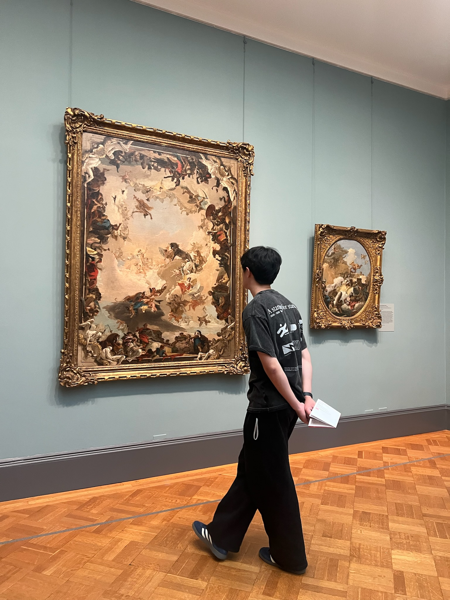

# About me
Hi! I'm Jiayi, a designer & business student @ Western University
I love solving ambiguous problems; either visually through design or through stories backed by data & analysis
Outside of work I'm a addicted to concerts & food. I'm also a pretty fast typist!
I'm always looking to meet new people, feel free to reach out :)
[back]
[back]